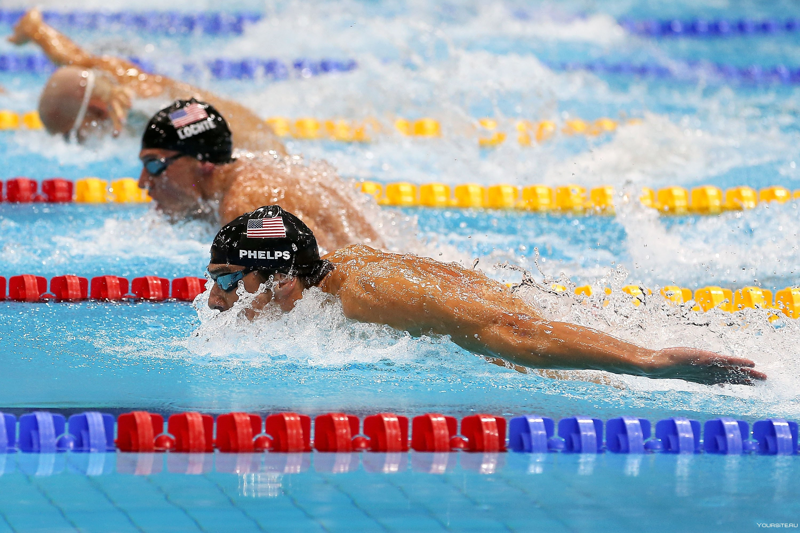

НОВОСТИ ПЛАВАНЬЯ
«Это был шлепок по лицу». Российский пловец — о четвёртых местах на Олимпиаде
Российский пловец Андрей Минаков, специализирующийся в плавании баттерфляем и вольным стилем, чемпион Европы и призёр чемпионатов мира, вспомнил о выступлениях на ОИ-2020 в Токио. Там он стал четвёртым на 100 м баттерфляем и 10-м на 100 м вольным стилем. В комбинированной мужской эстафете 4x100 м команда ОКР с Минаковым в составе была четвёртой, а в эстафете 4x100 м вольным стилем — седьмой. — Безусловно, было классно поучаствовать в Олимпиаде. Наверное, для спортсменов из других стран такое выступление было бы ок, они просто работали бы дальше. А с нашими перспективами на Олимпиаде мне очень грустно осознавать, что это, возможно, был мой единственный шанс, мои единственные Олимпийские игры. В эстафете 4х100 м вольным мы ехали за золотом, но ничего не получилось, в 4х100 м комбинированным стилем не повезло немного, как и на сотне «баттом». Конечно, это очень грустно (улыбается). Меня всегда учили, что на соревнования ты едешь на просто участвовать, а выигрывать. Это был первый раз, когда я на турнир приехал просто поучаствовать, когда я уехал без всего. Это не может не расстраивать», — сказал Минаков в эксклюзивном интервью корреспонденту «Чемпионата» Татьяне Постниковой. — Понятно, что сейчас это воспринимается иначе, но сразу после Игр эта череда обидных четвёртых мест тебя сломала или, наоборот, стала толчком для дополнительного роста? — Это был не толчок, это был шлепок по лицу (смеётся). На самом деле, сложно сказать. Я сам по себе постоянно развиваюсь как личность. Не могу сказать, что эти четвёртые места меня поменяли, сделали из меня кого-то другого. Так говорить было бы неправильно. Эти четвёртые места, по сути, ничего не поменяли. Сейчас влияет лишь осознание, что ничего не смог сделать, а когда представится следующая такая возможность, нельзя сказать.
Олимпийский чемпион Колесников рассказал, что плачет из-за неудач в плавании
Призёр Олимпийских игр и шестикратный чемпион мира по плаванию Климент Колесников заявил, что все спортсмены по-разному борются с расстройством после неудачи в соревнованиях и ничего постыдного в слезах нет. «Нужно, чтобы ты и на следующий день мог выступать, как ты это будешь делать, если ты сильно расстраиваешься? Мне повезло, я смог это сам перебороть. Я знаю, что много кто из спортсменов борется с этим, слушая музыку, кто-то разговаривает со своими друзьями и близкими, кто-то книжку читает, кто-то в телефоне играет. Все расстраиваются, и я сейчас расстраиваюсь — могу поплакать, если где-то что то плохо получается, и ничего в этом страшного нет. Тренируйся дальше, и всё будет», — приводит слова Колесникова ТАСС. Колесников также поделился историей, как плакал всю ночь из-за чрезмерных переживаний по поводу соревнований, когда показал результат на пять-шесть секунд хуже, чем на отборочных. Это было ещё в юношестве.
предыдущая следующая